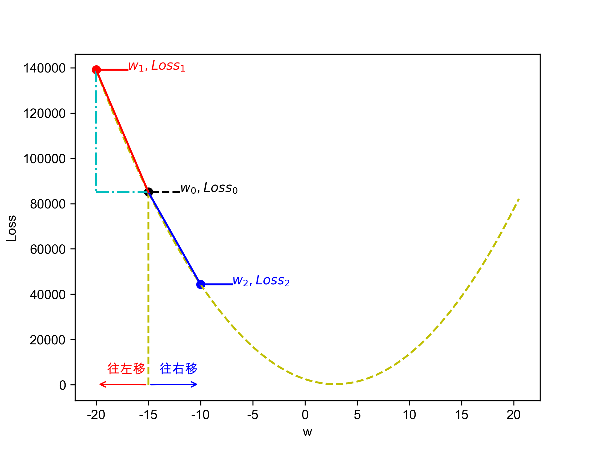

迴歸
Table of Contents

1. 簡介
1.1. 迴歸類型
即，根據一組預測特徵（predictor，如里程數、車齡、品牌）來預測目標數值（如二手車車價）1，這個目標數值也叫label。
部份迴歸演算法也可以用來分類，例如Logistic，它可以輸出一個數值，以這個數值來表示對應到特定類別的機率，例如，某封email為垃圾郵件的機率為20%、某張圖片為狗的機率為70%。
迴歸問題可分為兩類：
- Linear regression:
- 假設輸入變量(x)與單一輸出變量(y)間存在線性關係，並以此建立模型。
- 優點: 簡單、容易解釋
- 缺點: 輸入與輸出變量關係為線性時會導致低度擬合
- 例: 身高與體重間的關係
- Logistic regression
- 也是線性方法，但使用logist function轉換輸出的預測結果，其輸出結果為類別機率(class probabilities)
- 優點: 簡單、容易解釋
- 缺點: 輸入與輸出變量關係為線性時無法處理分類問題
典型迴歸案例: Boston Housing Data
1.2. 迴歸原理
1.2.1. Step 1
- Model: \(y = w*x+b\)
- Data: 找一堆現成的資料
1.2.2. Step 2: Goodness of Function
- Training Data
- Loss function L: 越小越好 input: a function / output: how bad it is
- Pick the “Best: Function \(f* = arg min L(f)\) 上述可以微分來求最佳解，即求 function L 的最小值
- 數值最佳解: Gradient Descent(找拋物面最低點)
1.3. 迴歸預測流程(以波士頓房價預測為例)
- Import the required module
- Load and configure the Boston housing data set
- Chekc the relation between the variable, using pairplot and correlation graph
- Descriptive statistics: central tendency and dispersion
- Select the required columns
- Train the test split
- Normalize the data
- Build the input pipeline for the TensorFlow model
- Model tranining
- Predictions
- Validation
2. 線性迴歸:年齡身高預測#1
2.1. 資料生成
這是當初上帝創造人類時決定人類身高的規則，我們也可以將之視為這組資料的模型，這個規則或模型是很神祕的，等一下我們要假裝我們不知道這個模型的存在，而迴歸的目的就在於想辦法猜出這個規則或模型。
import numpy as np import matplotlib.pyplot as plt n = 10 # 資料筆數 year = 5 + 25 * np.random.rand(n) # 年紀 height = 170 - 108 * np.exp(-0.2 * year) + 4 * np.random.randn(n) print(year) print(height)
[13.3, 16.2, 10.9, 28.7, 19.8, 14.2, 11.7, 26.6, 22.4, 18.3, 19.4] [163.61, 168.53, 155.06, 171.3 , 166.69, 160.98, 158.23, 165.27, 170.83, 161.31, 163.58]
2.2. 查看資料

2.3. 直線模型
我們可以在圖2中畫上無數條線，但，最能代表年齡和身高關係的線應該只有一條，我們要如何找出這條線？
首先，既然我們想以 直線 來表示我們想找的模型或規則，那我們就先把這條直線以下列數學示表示出來: \[y=ax+b\] 或 \[f(x)=ax+b\] 這樣的直線 \(y\) 或函數 \(f(x)\) 有無限多個，迴歸的目的就是要為函數 \(f(x)\) 找出一組最好的參數 \(a,b\)，或是為直線 \(y\) 找到最適合的斜率 \(a\) 和截距 \(b\)。這也是現今許多AI模型的基本精神：找到一組最好的參數，或者說：從無數個可能的模型中挑出最好的一個。
為了從無限多個備選模型中找出最佳的，我們需要有一個評估機制。
2.4. 損失函數
損失函數(loss function)也稱為成本函數(cost function)，就是最常用來定義、衡量模型誤差的方法。以圖3為例，我們可以計算所有原始資料\((x_0, y_0) \dots (x_9, y_9)\) 離這條預測線的距離(預測結果為 \(\hat{y_0} \dots \hat{y_9}\))，這些距離( \(y_0 - \hat{y_0} \dots y_9 - \hat{y_9}\) )的總和越小，表示預測線離每一點越近，也就是說這個模型越準確。
Figure 3: 直線模型的均方誤差
圖3中的 \(y_i\) 為實際資料 \(x_i\) 對應的結果， 而 \(\hat{y_i}\) 則是將每個實際資料 \(x_i\) 丟入模型後的預測結果，計算 \(y_i\) 與 \(\hat{y_i}\) 誤差的方法稱為 殘差平方和 (Residual Sum of Squares, RSS)，計算公式為 \[ RSS = \sum_{i=1}^{n}(\hat{y_i}-y_i)^2 \] 把RSS再除以n就或是 均方差 (Mean Square Error, MSE)，即 \[ MSE = \frac{1}{n}\sum_{i=1}^{n}(\hat{y_i}-y_i)^2 \] 迴歸的任務就是把RSS或MSE最小化。
如何讓RSS/MSE最小化呢？
2.5. 窮舉所有的可能性
為了找出哪一組參數 \(a,b\) 可以讓模型 \(y=ax+b\) 的預測誤差達到最小，我們可以將一些合理的a,b值可能組合都列出來，如圖4，我們列出了由參數 \(a\) (-40~40)、參數 \(b\) (40~160)的所有可能模型，圖中的 \(z\) 軸代表每一種模型產生的誤差(RSS)。由圖4可以看出兩件事:
- 參數 \(a\) 對模型誤差的影響遠大於參數 \(b\)
- 當參數 \(a\) 的值接近0時，所生成的模型會有較低的MSE，也就是模型預測能力較好
Figure 4: 不同a,b情況下的均方差
讓我們回憶一下等高線這個東西，如果我們把圖4當成某個山谷的地形圖(z軸為高度)，那我們就可以畫出這個區域的等高線圖5(先別管我是怎麼畫出來的)，從等高線圖5就能大概看出來當a的值約等於0、b的值約等於150時會有最低的SSE(如圖5中的紅點，這是我透過觀落音得到的訊息)。

Figure 5: 不同a,b情況下的MSE(俯視/等高線)
總之，看起來是有辦法找到最佳的模型的(只是有點麻煩)，這個方法稱為梯度下降，在這裡我們先知道有這麼個方法、知道這個方法可以找出最佳模型就好，至於深入探討這個方法是如何運作這件事，等我搞清楚了再說吧(或是等你們上大學再自己去研究)…
2.6. 快速求出最佳解
雖然從無數組 \((a,b)\) 中找出最好的一組看似困難，不過其實許多現成的相關模組已經有了這些功能，例如scikit-learn。以底下的程式為例：
1: import numpy as np 2: from sklearn.linear_model import LinearRegression 3: 4: year = np.array([13.3, 16.2, 10.9, 28.7, 14.2, 11.7, 26.6, 22.4, 18.3, 20.4]).reshape([-1, 1]) 5: height = np.array([163.61, 168.53, 155.06, 168.3 ,158.98, 158.23, 165.27, 170.83, 161.31, 163.58]) 6: 7: model = LinearRegression() 8: model.fit(year, height) 9: 10: slope = model.coef_ 11: intercept = model.intercept_ 12: heightHat = year * slope + intercept 13: 14: print('斜率/Slope:', slope) 15: print('截距/Intercept:', intercept)
斜率/Slope: [0.58182444] 截距/Intercept: 152.74006747354875
在上述程式碼中，真正與計算迴歸有關的只有第7行(利用scikit-learn建立一個線性迴歸模型)與第8行(把手上的10組 \((a,b)\) 資料丟進模型訓練)， 夠簡單吧，這樣我們就能畫出一條斜率約為0.58、截距約為152.74的最佳迴歸線(如圖6):

Figure 6: 線性迴歸求解
2.7. 逐步找出最佳解
雖然我們可以快速的利用如scikit-learn這類第三方模組求出最佳解，但是相信對於有志投入AI領域的你來說，光知道如何快速求解顯然遠遠不夠，讓我們來搞清楚這到底是怎麼完成的。
2.7.1. 隨機的力量
萬事起頭難，要找出最佳的參數組合 \((a,b)\) ，最合理的方式就是我們 閉上眼睛 在圖4中隨意點圈出一個點b \((a_0, b_0)\)，這就是我們的第一步，其結果就如圖7所示。有了這個開頭，我們接下來要做的事就是：
- 找出 一個方法 來判斷要由點 \((a_0, b_0)\) 點沿著這個曲面的 哪一個方向 前進 多遠 ，來到下一點 \((a_1, b_1)\)。也許是沿著曲面往上移一小段(如圖7中的藍色線段)、也許是沿著曲面往下移一小段(如圖7中的紅色線段)。
- 利用 同一個方法 來判斷接下來要由點 \((a_1, b_1)\) 點沿著這個曲面的 哪一個方向 繼續前進 多遠 ，來到下一點 \((a_2, b_2)\)
- 重複同樣的步驟，直到找到最佳的點 \((a_n, b_n)\) ，也就是這一點 \((a_n, b_n)\) 能使整個模型的SSE來到最小，讓模型具備最佳的預測效能。
Figure 7: 找出最佳a,b組合的方法
2.7.2. 何去何從
發現了嗎？其實AI的本質就是在解數學問題，我們在求某個方程式的最小值。
到這裡我想你一定會發現上面那個方法的幾個漏洞：
- 我怎麼知道要往哪個方向移呢？
- 我怎麼知道要移動多長的距離呢?
- 我怎麼知道移動後的新位置比原來的位置好呢？
好吧，我也不知道。不如我們先跳過這個看起來太複雜的問題，先換個簡單點的來強化自信。
3. 保持距離以測安全
讓我們先來看一個更簡單的例子。
這是一組從R語言資料集偷來的資料，這個資料集有七百多組教學用的資料集，其中有一組簡單的資料集cars，裡面有50筆資料，每筆資料只有兩個欄位：
- speed: 車速
- dist: 所需剎車距離
資料分佈如圖8所示

Figure 8: 車速與剎車距離關係分佈圖
我們為了這組簡單的資料分佈建了一個如下的模型 \[dist=w*speed\] 建立這組模型的最終目的當然是希望輸入 車速 (\(speed\)) 後就能得到 預測的剎車距離 ( \(dist\) ) 。我們也可以用更常見的數學表示法( \(x\) 為車速、\(y_{predicted}\) 為預測的剎車距離) ： \[ y_{predicted} = w * x \] 或是更常見的寫法( \(\hat{y}\) 為預測的剎車距離)： \[ \hat{y} = w * x \] 同時，為了評估不同 \(w\) 值下模型的優劣，我們當也要提出相對應的損失函數( \(y_{predicted}\) 為模型預測的剎車距離、 \(y_{actual}\) 為實際資料的剎車距離)： \[ Loss = \frac{1}{n}\sum_{1}^{n}(y_{predicted} - y_{actual})^2 \] 例如：
- 當 \(w\) 為-15時，Loss值為85113.26
- 當 \(w\) 為-10時，Loss值為44346.86
- 當 \(w\) 為 -5時，Loss值為16808.46
- 當 \(w\) 為 0時，Loss為2498.06
- 當 \(w\) 為 5時，Loss為1415.66
- 當 \(w\) 為 10時，Loss為17152.28
在這個例子中，我們的任務就變成：提出一個假設模型( \(y=w*x\) )，然後找出最理想的參數( \(w\) )，讓這個模型可以俱備最好的預測能力(Loss值最小)。
3.1. 模型的目的
顯然，對於如何解出方程式(或是說找到最佳模型) ，一開始當然沒啥頭緒，那，不如就暴力一點吧，弄個窮舉法：試試從 \(w=-20\) try到 \(w=+20\) 吧，觀察一下損失函數Loss的變化：

Figure 9: 不同參數w下的損失函數Loss分佈圖
現在我們可以想辦法找出最好的 \(w\) 在哪裡了。
3.2. 沿著曲線上下爬
雖然我們從圖9大概可以看出來模型大概在參數 \(w\) 介於0和5之間會有最小的Loss，也就是模型會最準確，但身為嚴謹的學術研究者，我們不能這樣蠻幹，這是土匪的行為，我們要用最科學的方法：既然不知道從哪裡著手，就閉著眼睛隨意給個 \(w\) 好了，例如：-15，如圖10。
你看，我們這不就邁出成功的第一步了?
隨機就是這麼美而有力!!

Figure 10: 先隨機假設一個數(-15)為最佳參數w的值
有了出發點(我們估且稱之為 \(w_0\) 好了，如圖10)，接下來就只要決定下一個「較好的下一個 \(w_1\) 」是在 \(w_0\) 的左邊還是右邊(根據Loss值來判斷)，然後繼續往左或往右移(如圖11。
總之，我們只要決定以下兩個因素，就可以利用python把模型的最佳參數 \(w\) 找出來了。
- 每次要往左或往右移多少距離?
- 這樣的修正動作要重複幾次？（或，結束的條件為何？)

Figure 11: 決定w應往哪個方向移動
3.3. 確定方向
BUT，相信學過幾何學的你一定有想到另一種策略：切線。既然 \(w\) 與 Loss的關係是如圖11的曲線，我們應該可以找出 \(w_0\) 這個點的 切線 。如果我們從點 \(w_0\) 的 \(x\) 軸各向左、右移動一段很小的距離(例如0.0000001)，所連接的這條線(如圖12)就很接近點 \(w_0\) 沿曲線的切線了。
根據斜率的計算公式(或是以肉眼觀察這條切線)，我們發現這條切線的斜率是負的。這表示
- 曲線的最低點應該是出現在點 \(w_0\) 的右側
- 下一點 \(w_1\) 要往右邊找

Figure 12: 決定w應往哪個方向移動
問題是：該往右邊移動多少距離呢？要移動幾次？
3.4. 確定移動距離與重複次數
由圖12的 \(w\) 與Loss分佈，不難發現可以逐步往右移動w，Loss的值就會慢慢降下來，所以我們可以先這麼計畫：
- 每次由 \(w0\) 的 \(x\) 軸往右邊加0.5、直到Loss不再變小。
或換另一種說法：
- 每次往右邊加0.5、直到Loss開始變大(因為越過了曲線最低點)。
上述的Python實作程式碼如下：
1: from pydataset import data 2: import numpy as np 3: 4: # 取得資料集 5: cars = data('cars') 6: speed = np.array(cars['speed']) 7: dist = np.array(cars['dist']) 8: 9: # 計算Loss用的function 10: def loss_func(y_true, y_predict): 11: return y_true - y_predict 12: 13: w = np.arange(-20,21,0.5) 14: loss = [] 15: for i in w: 16: yHat = i * speed 17: loss.append(np.mean(loss_func(dist, yHat)**2)) 18: 19: # 找最佳w值, 這裡以x代表w值 20: x, y = -15, loss[np.where(w == -15)[0][0]] 21: while True: 22: loss = np.mean(loss_func(dist, x*speed)**2) 23: x += 0.5 24: newLoss = np.mean(loss_func(dist, x*speed)**2) 25: if newLoss >= loss: 26: print(f'STOP: w值:{x-0.5}, Loss:{loss}') 27: print(f'NEXT: w值:{x}, Loss:{newLoss}') 28: break 29: if int(x) % 5 == 0: 30: print(f'w值:{x}, Loss:{newLoss}')
逐步右移的控制主要由第21行的while負責，\(w\) 每次右移0.5，直到Loss值不再變小就停止(第25行)，為簡化輸出，每移動10次 \(w\) 我們就把對應的 \(w\) 和Loss輸出來觀察一下（第29行)。輸出結果如下：
w值:-10.5, Loss:47828.24 w值:-10.0, Loss:44346.86 w值:-5.5, Loss:18967.04 w值:-5.0, Loss:16808.46 w值:-0.5, Loss:3333.84 w值:0.0, Loss:2498.06 w值:0.5, Loss:1794.56 STOP: w值:3.0, Loss:261.26 NEXT: w值:3.5, Loss:351.44
由執行結果可發現隨著 \(w\) 值的增加，Loss值也隨之減少，直到 \(w\) 值為3時可以得到最低的Loss值(261.26)，過了這一點，Loss值便又開始增加。圖14為w值持續修正的模擬結果，圖13則為假設\(w\) 值為3所畫出的預測線(模型)。

Figure 13: 車速與剎車距離關係分佈及預測模型
然而，這個 \(w=3\) 的模型就是最佳模型嗎？你有什麼可以更快找到更精確的「使Loss最低的 \(w\) 值」的修正方案嗎？

Figure 14: 決定w應往哪個方向移動
3.5. 斜率與微分
在前節中我們計算圖14中 \(w_0\) 的斜率方法是由 \(w=-15\) 這點各往左、右移動0.0000001，這個方法當然不太準確，最好的方法是各往左、右移動 無限小 的距離，這樣畫出來的就是點 \(w_0\) 的切線，而這條切線的斜率也就是 \(w_0\) 的斜率。為什麼 找出曲線上各點的斜率 這件事如此重要呢？原因有二
- 在第3.4中，我們據以移動 \(w\) 值的依據是 “ 每次往右邊加0.5、直到Loss開始變大(因為越過了曲線最低點)” ，其實我們有另一種更方便的判斷方式：在曲線最低點左側所有點的斜率均為負、在曲線最低點右側所有點的斜率均為正，知道了某點的斜率為正或負，我們就知道該往左側或右側去移動，找出最低點的位置。
- 曲線最低點的斜率為0，我們只要能找到斜率為0的這一點，就能找到模型的最佳參數。
事實上，如果我們知道曲線 \(y=f(x)\) 的實際內容，我們就能用微分來找到曲線上的最低點。
3.5.1. 頂點公式求函數解
如假設損失函數L為 \[ Loss = MSE = \frac{1}{n}\sum_{i=1}^{n}(\hat{y_i}-y_i)^2 \] 其中
- \(n=50\)(實際有50筆資料)
- \(\hat{y_i}\)為用模型\(y=wx\)所預測出來的剎車距離
- \(y_i\)為當實測車速為\(x_i\)時所對應的剎車距離
故
\begin{align} Loss=\frac{1}{n}\sum_{i=1}^{n}(\hat{y_i}-y_i)^2 \\ =\frac{1}{n}\sum_{i=1}^{n}(wx_i - y_i)^2 \\ =\frac{1}{n}\sum_{i=1}^{n}(w^2x_i^2 -2wx_iy_i + y_i^2) \\ =\frac{1}{n}(w^2\sum_{i=1}^{n}x_i^2 -2w\sum_{i=1}^{n}x_iy_i + ny_i^2) \\ \end{align}雖然可以用微分來解，但是這個一元二次函數也可以用頂點公式來找出曲線頂點(模型最小值)，求出的最小Loss會出現在 \[ w=\frac{\sum_{i=1}^{n}x_iy_i}{\sum_{i=1}^{n}x_i^2} \] 因為當 \(a>0\) \[ ax^2+bx+c = a(x+\frac{b}{2a})+\frac{4ac-b^2}{4a} \] 故 函數在 \(x=\frac{-b}{2a}\) 時有最小值
以程式驗證如下：
1: from pydataset import data 2: import numpy as np 3: 4: cars = data('cars') 5: speed = np.array(cars['speed']) 6: dist = np.array(cars['dist']) 7: 8: print('最小Loss的參數w值:',sum(speed*dist) / sum(speed*speed))
最小Loss的參數w值: 2.909132143937103
3.5.2. 微分求函數頂點
當 \(a>0\)
\begin{align} f(x)=ax^2+bx+c \\ f'(x)=2ax+b \end{align}找曲線最低點、令函式為0 \[2ax+b=0\] 故 \(x=\frac{-b}{2a}\) 時有最小值
4. 線性迴歸:年齡身高預測#2
回到第2.7節，我們提及要找出最佳的參數組合 \((a,b)\) ，最合理的方式是在圖4中隨意點圈出一個點b \((a_0, b_0)\) (如圖7)。接下來：
- 找出 一個方法 來判斷要由點 \((a_0, b_0)\) 點沿著這個曲面的 哪一個方向 前進 多遠 ，來到下一點 \((a_1, b_1)\)。也許是沿著曲面往上移一小段(如圖7中的藍色線段)、也許是沿著曲面往下移一小段(如圖7中的紅色線段)。
- 利用 同一個方法 來判斷接下來要由點 \((a_1, b_1)\) 點沿著這個曲面的 哪一個方向 繼續前進 多遠 ，來到下一點 \((a_2, b_2)\)
- 重複同樣的步驟，直到找到最佳的點 \((a_n, b_n)\) ，也就是這一點 \((a_n, b_n)\) 能使整個模型的SSE來到最小，讓模型具備最佳的預測效能。
假設損失函數L為 \[ L = MSE = \frac{1}{n}\sum_{i=1}^{n}(\hat{y_i}-y_i)^2 \] 因為 \(\hat{y_i}\) 代表直線模型 實際的做法就變成：
- 計算點 \((a_0, b_0)\) 的斜率，然後朝著 使Loss(MSE)減小得最快的方向 稍微移動 \(a, b\)
- 重複步驟1
Footnotes:
Hands-On Machine Learning with Scikit-Learn: Aurelien Geron